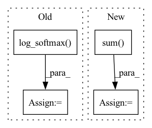

Pattern ID :37709
Before Change
input: [N, C]
target: [N, ]
logpt = F.log_softmax( input, dim=1)
pt = torch.exp(logpt)
logpt = (1-pt)**self.gamma * logpt
loss = F.nll_loss(logpt, target, self.weight,ignore_index=self.ignore_index)
return lossAfter Change
if self.reduction == "mean":
loss = loss.mean()
elif self.reduction == "sum":
loss = loss.sum()
return loss
class LabelSmoothingCrossEntropy(nn.Module):In pattern: SUPERPATTERN
Frequency: 3
Non-data size: 4
Instances Fragment ID: 108316997
Project Name: muqiujun-ai/bert4pytorch
Commit Name: 169a074a051648e0c9cb0af37363e917da7243dd
Time: 2022-03-22
Author: zh@3752154
File Name: bert4pytorch/losses.py
M Class Name: FocalLoss
N Class Name: FocalLoss
M Method Name: forward(3)
N Method Name: forward(3)
M Parent Class: nn.Module
N Parent Class: nn.Module
M File Name: bert4pytorch/losses.py
N File Name: bert4pytorch/losses.py
M Start Line: 14
M End Line: 22
N Start Line: 12
N End Line: 20
Before Change
loss = loss.mean()
elif self.contrastive_loss_type == "softmax":
distance_matrix /= self.temperature
loss = - F.log_softmax( distance_matrix) .sum()
else:
raise ValueError(f"Contrastive loss type {self.contrastive_loss_type} not supported")
After Change
positive_examples = torch.cat([positive_examples_1, positive_examples_2], dim=0)
mask = (~torch.eye(self.batch_size * 2, self.batch_size * 2, dtype=torch.bool)).to(self.device)
numerator = torch.exp(positive_examples)
denominator = (mask * torch.exp(distance_matrix)).sum(dim=1)
softmax = numerator / denominator
loss = - torch.log(softmax)
loss = loss.mean()
else: Fragment ID: 108316992
Project Name: aditeyabaral/calbert
Commit Name: b2c6c9c898a60942ede94ec997b82d864b7fdabb
Time: 2022-07-21
Author: aditeya.baral@gmail.com
File Name: calbert/SiamesePreTrainer.py
M Class Name: SiamesePreTrainer
N Class Name: SiamesePreTrainer
M Method Name: calculate_contrastive_loss(4)
N Method Name: calculate_contrastive_loss(4)
M Parent Class:
N Parent Class:
M File Name: calbert/SiamesePreTrainer.py
N File Name: calbert/SiamesePreTrainer.py
M Start Line: 153
M End Line: 157
N Start Line: 153
N End Line: 165
Before Change
elif self.hparams["loss_func"] == "cross_entropy_with_sync":
loss = F.cross_entropy(S_wisdom, y).sum() // (N, |W|), (N,) -> (N,) -> (1,)
S_wisdom_literal = torch.log_softmax(S_wisdom_literal, dim=1)
S_wisdom_figurative = torch.log_softmax( S_wisdom_figurative, dim=1)
// mse outperforms kl_div: https://arxiv.org/abs/2105.08919
// KD library gets use of MSE:
// https://github.com/SforAiDl/KD_Lib/blob/df4d9e5c0a494410cb2994e3a1d5902afdccf0d6/KD_Lib/KD/vision/vanilla/vanilla_kd.py//L69-L71
// you add this to the cross entropy lossAfter Change
elif self.hparams["loss_func"] == "cross_entropy_with_mtl":
loss = F.cross_entropy(S_wisdom, y).sum() // (N, |W|), (N,) -> (N,) -> (1,)
loss += F.cross_entropy(S_wisdom_literal, y).sum() // multi-task learning
loss += F.cross_entropy(S_wisdom_figurative, y).sum() // multi-task learning
// S_wisdom_literal = torch.log_softmax(S_wisdom_literal, dim=1)
// S_wisdom_figurative = torch.log_softmax(S_wisdom_figurative, dim=1)
// // mse outperforms kl_div: https://arxiv.org/abs/2105.08919 Fragment ID: 108316995
Project Name: eubinecto/wisdomify
Commit Name: dd539ce1876eeeb8b6735eedd12061f3265ad698
Time: 2021-11-23
Author: eubinecto
File Name: wisdomify/models.py
M Class Name: RDGamma
N Class Name: RDGamma
M Method Name: training_step(3)
N Method Name: training_step(3)
M Parent Class: RD
N Parent Class: RD
M File Name: wisdomify/models.py
N File Name: wisdomify/models.py
M Start Line: 353
M End Line: 359
N Start Line: 352
N End Line: 354